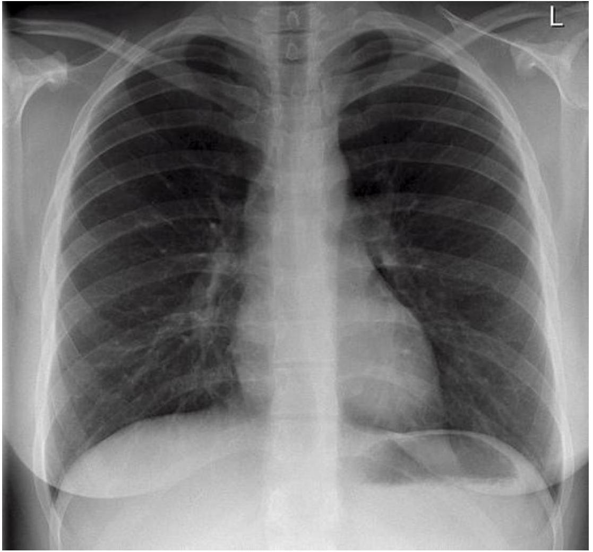
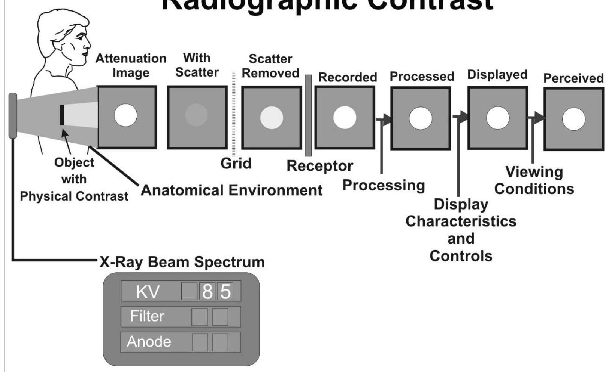
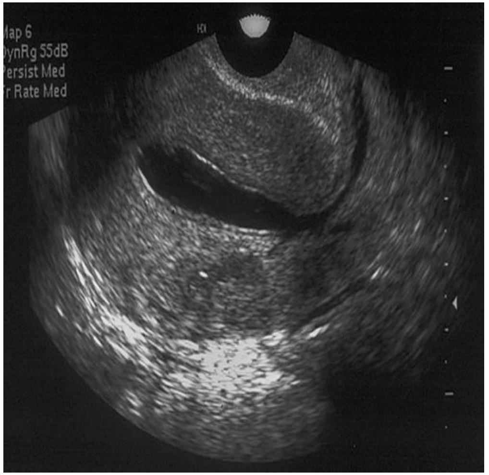

CONTRAST MEDIA IN IMAGING AND RELATED ADVERSE EFFECTS
DDIRM
MNW 26/11/15
Definition
- Italian: contrastare
- To stand out against.
- CM will enhance and/ or outline structures or fluids in the body and;
- Improve visibility or make the invisible visible
- Legally contrast medium is a registered pharmaceutical drug.
Contrast Agents Cont.
Types
- Several types of contrast media are in use in medical imaging and they can roughly be classified based on the imaging modalities where they are used.
General Physical Properties of Contrast Media
- Non-toxic
- Provide adequate contrast in the area of interest e.g. dense in aortography but dilute in choledochography
- Have suitable viscosity especially in intravascular contrast
- Suitable persistence e.g. contrast introduced into the lymphatic system
- Must have miscibility or immiscibility as needed e.g. in renal cyst puncture, myodil vs iopamidol
IMAGING MODALITIES
- X-Ray Imaging
- CAT or CT Scans
- Ultrasound Imaging
- Magnetic Resonance Imaging
- Scintigraphy (Radionucleotides)
CONTRAST AGENTS
- Most common contrast agents in use are based on X-ray in its quality of attenuation (radio contrast agents)
- and Magnetic resonance signal enhancement, based on body water content.
Radiographic Contrast : Influenced by
- Radiation Quality (KVP)
- Film Contrast
- Radiographic object (Patient) - patients body consists of:- water, fat, muscle, bone. - each of these has a specific density, governed by the relative Atomic No. of its elements.
KEY DENSITIES IN THE HUMAN BODY
- 1 - Air/Lung
- 2 - Fat (layer between soft tissues,below skin.)
- 3 - Soft tissue
- 4 -Bones.
- The greatest contrast is found in areas of greatest difference in density of adjacent structures ( AIR/BONE).
Human Body Tissue Relative Densities
| Substance | Atomic # | Density (kg/m3) |
|---|---|---|
| Fat | 6.3 | 910 |
| Soft Tissue | 7.4 | 1000 |
| Water | 7.6 | 1000 |
| Muscle | 7.6 | 1000 |
| Bone | 13.8 | 1850 |
DENSITIES ON A CHEST X-RAY
FEMALE
MALE

Radio Contrast Material
| Contrast Agent | Atomic # | Density (kg/m3) |
|---|---|---|
| Air --------------- | 7.6 | 1.3 |
| Iodine------------- | 53 | 4930 |
| Barium-------------- | 56 | 3500 |
X- ATTENUATION
- X-rays are attenuated as they pass through matter.
- That is, the intensity of an X-ray beam decreases the farther it penetrates into matter.
- Basically, each interaction of an X-ray photon with an atom of the material removes an X-ray from the beam, decreasing its intensity.
X-ray Imaging
Radiographic Contrast
X-ray Attenuation Discussion
- The Radiocontrast agent:-
- Iodine and barium are the most common types of contrast medium for enhancing x-ray-based imaging methods.
- Various sorts of iodinated contrast media exist, with variations occurring between the osmolarity, viscosity and absolute iodine content of different media. These can be ionic or non ionic.
- The Iodine element is usually bound to the stable benzene element, an hydrocarbon (C6H6 ).
RADIO CONTRAST AGENTS
- RCA ARE EITHER INTRAVEOUS OR ORAL
Intravenous Agents
- Are usually iodine based
- Eliminated from the body mainly by the kidneys.
- Travel through the blood vessels, to all organs and body tissues
Oral Agents
- Most common are Barium Sulphate and Gastrograffin administered in a milk shake type formula
Rectal Agents
- Used in imaging the lower gastrointestinal tract including the large intestine
RADIO CONTRAST AGENTS (Types)
BARUIM Z# 56
- NON WATER SOLUABLE
- GI TRACT ONLY INGESTED OR RECTALLY
- KVP 90-120*
IODINE Z# 53
- WATER SOLUABLE
- POWDER
- LIQUID
- INTRAVENOUS OR
- Intrathecal
- GI TRACT
- Also OIL based
- KVP BELOW 90
Water- Soluble Contrast Media Properties:
- Very hydrophilic
- Low lipid solubility
- Low binding affinities for protein, receptors or membranes
- Molecular weights < 2000; 600-800 for monomers
- Good distribution/ bio-availability on intravascular injection
- Do not enter blood or tissue cells
- Rapid excretion with > 90% renal excretion within 12 hours
- Minimal pharmacological action
ICM
- They can be Monomers or Dimers (based on the Iodine carrier benzene ring)
- Non-ionic dimers are favored for their low osmolarity and toxicity, but have a correspondingly higher price attached to their use.
The Benzene Ring
[R]c1c(I)c([R])c([Hg][Te])c(C(=O)O)c1I
Ionic monomer 3 iodine atoms : 2 particles, Ratio : 1.5

Ionic dimer 6 iodine atoms: 2 particles, Ratio : 3.0
[R]c1c(I)c([R])c(I)c([R])c1I
Non-Ionic monomer 3 iodine atoms : 1 particle, Ratio : 3.0
[R]c1c(I)c(I)c(CCc2c(I)c([R])c(I)c([R7])c2I)c([131I])c1I
Non-Ionic dimer 6 iodine atoms : 1 particles, Ratio 6.0
IVC Agents /Media
- All intravascular iodinated contrast agents are based on a tri-iodinated benzene ring.
- Three primary forms exist: - High-osmolar contrast media (HOCM) These are the oldest agents. They are relatively inexpensive, but their utility is limited. They are monomers (single benzene ring) that ionize in solution with a valence of -1 . Their cation is either sodium or meglumine.
LOW OMOLAR CONTRAST MEDIA (LOCM)
- A major advance was the development of non ionic compounds. They are monomers that dissolve in water but do not dissociate. Hence, with fewer particles in solution, they are designated low-osmolar contrast media.
ISO- OSMOLAR CONTRAST MEDIA
- The most recent class of agents are dimers they consist of a molecule with two benzene rings ( each with 3 iodine atoms) that do not dissociate in water (nonionic).
- These compounds are designated iso-osmolar contrast media (IOCM).
1- Iodine Based Contrast; Classification
-
Depending on chemical properties:-
- Water-soluble or lipid-soluble
- Ionic or non-ionic
- High osmolar/ low osmolar
- Monomer or dimer
- For ionic water-soluble contrast can be salts of sodium, meglumine or both
-
Method of administration
- Oral
- Intravascular
NON SOLUBLE RCA
- Barium Sulfate is the sulfate salt of barium, an alkaline, divalent metal.
- Barium sulfate is quite insoluble in water, and is used as a radiopaque agent to diagnose gastrointestinal medical conditions.
- Barium sulfate is taken by mouth or given rectally.
PATIENT PREPARATION
- To enhance imaging patients are given laxatives, enemas, or suppositories, to clean the GIT.
- NPO for a minimum of 6-5hrs.
- Radio CMA include:- Barium (Ba) Barium Sulphate (BaSO4) Iodine (I) Intravenous Gastrograffin ( water soluble GIT CM)
- These agents all work in the same way but vary in function by how they are administered and how they are removed from the body
Other Drugs Used in Imaging.
Glucagon
- Ordinarily used to treat hypoglycemia Causes relaxation of the smooth muscles of the GI tract
- Useful as a diagnostic aid in examinations of the GI tract because it slows peristalsis and prevents cramping. Preferred over atropine because of lower incidence of side effects. Preferred over atropine because of lower incidence of side effects.
IMAGES WITH CONTRAST
RCA-Facts to Remember
- Osmolality is dependent on the number and not size of particles in solution
- Radiographic contrast is dependent on the iodine concentration of the solution and therefore the number of iodine particles per molecule and the concentration of the molecules in solution
- Non-ionic contrast does not dissociate in solution and can be used for myelography/ radiculography
- Low osmolality reduces; pain on intra-arterial injections adverse reactions
ULTRASOUND
- The most underdeveloped of the 5areas(S5)
- Used in imaging solid or water filled organs, including the liver, spleen, kidney, heart, blood vessels, the Gall Bladder, urinary bladder, and the uterus, (GS).
Contrast Media for Ultrasound
- the ultrasound image is created by ultrasound energy reflected by different structures of the body: "echoes".
- An ultrasound contrast medium is therefore an echogenic substance which is introduced into a vessel or organ system in order to induce and increase echogenicity - increased ability to reflect ultrasound energy.
ULTRASOUND Principles
- The extent to which sound is reflected by a tissue depends on the acoustic impedance of the tissue or the tissue components.
- The larger the difference in acoustic impedance between two tissue types, the larger the reflection of the ultrasound from the interface between those two tissues.
- No Contrast Agents are used on a regular basis for U/S but the use of microbubbles has potential
ULTRASOUND Media Examples
-
Such media may be injected intravenously and examples are
- suspensions of solid particles, emulsions of fluid droplets, micro bubbles of pure gas, gas bubbles encapsulated in various structures or liquids that release micro bubbles.
- Like other contrast media, ultrasound media should have low toxicity and fact excretion
- The biggest problem is preventing break down of the bubbles in the heart and the lungs.
Micro Bubbles in Blood Vessels
Contrast Enhanced US Findings:
- number of vessels
- Irregular, clustered
- Abnormal branching patterns
- Abnormal enhancement pattern
- rapid uptake


Ultrasound Contrast Cont.
Uterine Cavity Poorly Visualised

Fluid in the uterine cavity
MRI and Contrast Agents
- Initially thought to be unnecessary due to MRI inherent 'soft tissue' contrast ad spatial resolution
-
MRI contrast depends on multiple parameters
- Spin density
- T1, T2 Relaxation
- Magnetic susceptibility
- Diffusion- movements of bulk water molecules
- Perfusion-tissue microcirculation or perfusion
- The contrast agent development is targeted at the above parameters
MRI Contrast Agents - Types
- MRI contrast agents cause changes in local magnetic fields by inducing proton relaxation time shortening.
-
According to their physical characteristics intravenous MRI contrast agents can be classified into the following two major groups.
- Paramagnetic contrast agents Shorten T1 relaxation time of the protons. Gadolinium, a rare-earth metal, is the most commonly used paramagnetic contrast agent. Gadolinium as a free ion is highly toxic, therefore stabile chelated gadolinium compounds, which is generally regarded as safe, are used in medical imaging. Apart from the gadolinium-containing contrast agents there are other, so-called organ- or tissue-specific contrast agents containing other metallic elements.
- b) Superparamagnetic contrast agents reduce the T2 relaxation time of the protons in absorbing tissues.
MRI Contrast Agents
- Gadolinium Chelates have similar clinical properties as iodinated contrast
- Gd has a molecular weight of 592.
- Gd has 7 unpaired electrons. Shortens both T1 & T2 values. This effect is seen best on T1 weighted images.
- Gd chelates circulates within the vascular system, do not cross the normal BBB and are excreted unchanged by the kidneys
Oral MRI Contrast
- Two main groups Enhance T1 signal- Gd and Mn Chelates, iron oxide salts Reduce T2 signal- SPIO, barium sulphate, air, clay.
- Natural products that contain high manganese like blueberry and green tea can also be used.
- Perflubron has been used in pediatric GIT imaging.
- It reduces the amount of protons in the body cavity making it appear darker on images.
CONTRAST REACTIONS
MOST CONTRAST RELATED REACTIONS ARE RELATED TO IODINATED CONTRAST AGENTS.
METHODS OF CATEGORIZING.
- There are two useful ways to approach contrast reactions.
- One is to categorize them according to their severity.
- This method has immediate clinical relevance when reactions occur and provides a framework for determining an appropriate course of treatment.
- The other approach is to analyze them according to the type of adverse reaction.
- This is important to understand the mechanisms of reaction
Incidence of Reactions
| Reaction | HOCM | LOCM |
|---|---|---|
| Overall | 5-8% | 1-2% |
| H/O Allergy | 10% | |
| Severe | .1% | |
| Fatal | 1/40k-170k | 1/200k-300k |
Types of Reactions
- Anaphylactoid
- Nonanaphylactoid
- Delayed
Anaphylactold Reactions
- Urticaria
- Facial/laryngeal edema
- Broncho spasm
- Circulatory collapse
Mri Contrast React.
- Gadolinium MRI contrast agents have proved safer than the iodinated contrast agents.
- Anaphylactic reactions are rare, but might occur similarly to X-ray radiography and computed tomography.
- There is a risk of a rare but serious illness called nephrogenic systemic fibrosis, this is linked to the use of gadolinium-containing MRI contrast agents.
- Its pathophysiological background is unknown, renal impairment carries a risk of its development.
- For this reason MRI contrast is contraindicated in patients with GFR under 30 and in children under the age of one year.
Non Anaphylactoid Reactions
- Nausea/vomiting
- Cardiac arrhythmia
- Pulmonary edema
- Seizure
- Renal failure
Delayed Reactions
- Fever, chills
- Rash, flushing, pruritis
- Arthralgias
- Nausea, vomiting
- Headache
Risk Factors and Precautions
- Risks Allergy Renal failure Other
- Precautions Premedication Hydration Dose limitation
Renal Risk
Elevated creatinine, especially with diabetes, or paraproteinemia such as myeloma
- Hydration
- Limit dose
- Consider premedication
Allergic Risk
Patients with hx of major allergy, asthma- pre medication recommended 13,7 , and 1 hr prior
- 50 mg prednisone PO 13, 7, and 1 hr prior
- 50 mg Benadryl PO/IM 1 hour prior
- If urgent: 200 mg hydrocortisone IV q 4 hrs
- Consider ephedrine (NOT if HTN, angina, arrhythmia)
- At least 6 hours from first dose
Metformin
Risk of lactic acidosis
- Discontinue for 48 hrs after contrast
- Check creatinine before resuming
- If Metformin+CRI+IVC → 50% mortality
Cardiac Risk
- Angina/CHF with minor exertion
- Aortic stenosis
- Primary pulmonary hypertension
- Severe cardiomyopathy
- Limit dose
Other Risks
- Pregnancy: category B
- Breast-feeding: Package insert: may substitute with bottle for 24 hrs , not necessary 1% excreted in milk, of which 2% absorbed by baby
Other Risks Table
| Pheochromocytoma | Hypertensive crisis* |
| Sickle cell disease | Sickle cell crisis |
| Untreated hyperthyroid | Thyroid storm |
| Myasthenia gravis | Exacerbation* |
| Interleukin-2 therapy | Delayed reaction |
*Doubtful risk with nonionic agents
MANANGEMENT
- Being aware of manangent of these acute reactions is a duty of all the medical team in the Imaging department.
Acute Reactions
- ALWAYS ABC's Vitals Physical exam
- OFTEN Oxygen 10 L/min IV Fluids: NS or Ringer's
Urticaria
- OBSERVE Listen to lungs
- Benadryl 25-50 mg PO/IM/IV
- Zantac 50 mg PO or slowly IV
- Epi SC ( 1:1000 ) . 1-.3 ml = .1-.3 mg
Laryngeal Edema
- EPINEPHRINE IV slow, 1.0 ml *
- May repeat up to 1 mg *
- O2 10L/min via mask*
- NO BRONCHDILATORS
Bronchospasm
- 02 10L/min
- Monitor: ECG, O2 sat, BP
- ALBUTEROL INHALER
- Epinephrine SC. 1-.3ml*
- Epinephrine IV 1.0 ml , may repeat*
Hypotension With Bradycardia (Vagal Reaction)
- Legs elevated, Monitor vital signs
- 02 10L/min
- Ringer's lactate or normal saline
- ATROPINE . 6-1.0 mg IV slow, repeat to .04 mg/kg
Hypotension With Tachycardia
- Legs elevated > 60 degrees, head down
- Monitor ECG, O2 sat, BP
- 02 10L/min
- Ringer's lactate or normal saline
- Epinephrine IV 1.0 ml slowly, up to 1 mg
- DOPAMINE 1600 ug/ml : 2-5 ug/kg/min IV
- Consider ICU transfer
Contrast-Induced Nephrotoxicity
- Usually asymptomatic: creatinine peaks 3-5 days, in severe oliguric renal failure: peaks 5-10 days
- Incidence: 7-8% arterial injections 2-5% venous injections ~0% venous injections if no risk factors
Air Embolism
Clinically silent air embolism not uncommon: air bubbles in the thoracic veins, MPA or RV
Significant air embolism potentially fatal but extremely rare
Symptoms: air hunger, dyspnea, cough, pulmonary edema, tachycardia, HTN, wheezing
s Treatment: 100% 02, LLD, hyperbaric 02, CPR if arrest occurs
TAKE HOME POINTS
- Legally contrast medium is a pharmaceutical drug; therefore it has contraindications and might have side effects.
- Barium sulphate, an insoluble oral radiocontrast, is contraindicated in suspected bowel perforation and in patients at risk for aspiration.
- Kidney function has to be checked prior to intravenous contrast administration.
- In hyperthyroidism the thyroid function has to be checked before a iodinated contrast study.
- It has been recommended that all drugs which are excreted by the kidney be stopped temporarily before intravascular administration of contrast media.